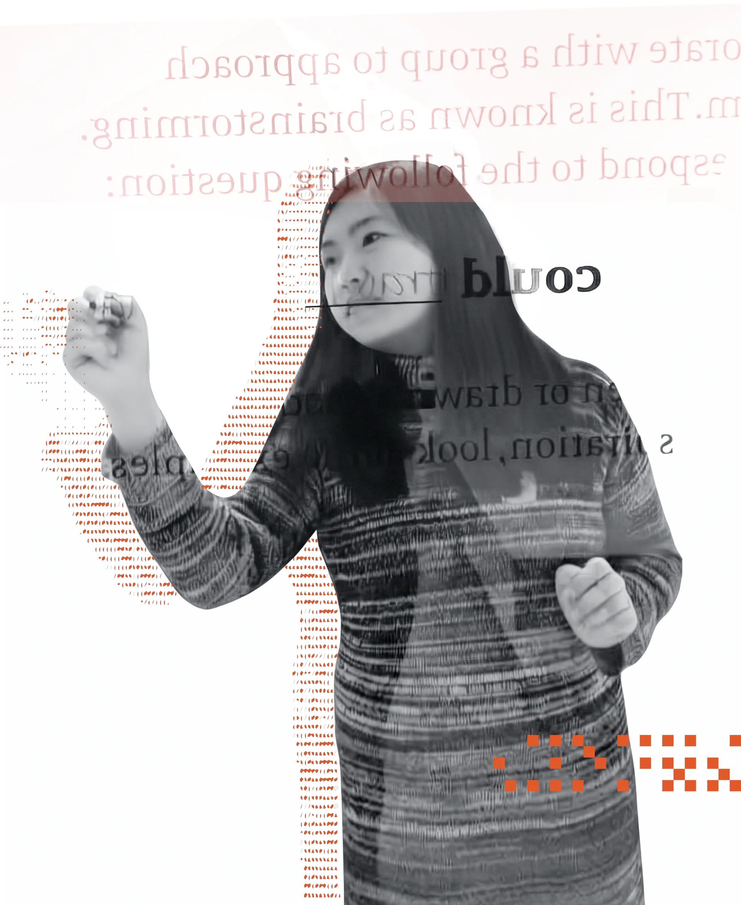

Hi, I'm Irene.
I design for how work
actually gets done.
Product Designer with 4+ years of experience turning user needs, business goals, and product constraints into thoughtful digital experiences.
Hi, I'm Irene.
Product Designer with 4+ years of experience turning user needs, business goals, and product constraints into thoughtful digital experiences.
Better Direct · Sole product designer · 2026
Redesigned the Quote Detail page around the way salespeople build, price, and send customer quotes.
Grand Canyon University · UX designer · 2024
Moved participation out of a long discussion list and into the calendar students already used, so they could track their replies each week.
Global insurer, agency project · UX designer · 2025
Turned dozens of spreadsheets into one dashboard built around how supervisors oversee legal spend.

I like the messy middle of enterprise software: the rules, the exceptions, and the workarounds people create when a system doesn't fit how they work.
Before I design anything, I watch how the work actually happens. Then I look for the structure that makes it feel simple. I've done this for sales teams, universities, and legal operations.
Outside of work, I play Pikmin Bloom. It gets me walking around the city, collecting postcards from the places I find and sending them to friends.